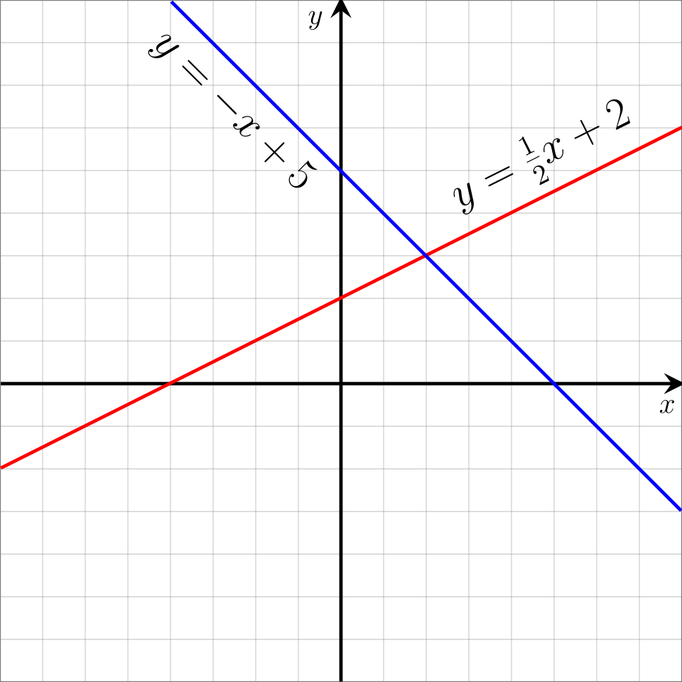
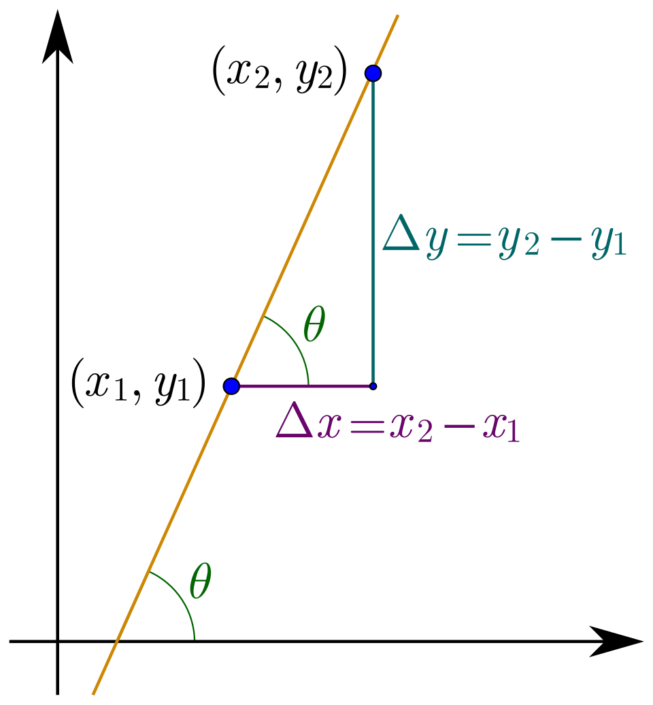

y = 2x + 3 input x = 4 → output y = 11 slope 2, start 3 → one perfectly straight line
Those three lines are a linear function in action — and by the end of this lesson you will not just recognize one, you will be able to build it from almost any clue (two points, one point plus a slope, a table, a story), flip it backwards, shift it around the plane, chain it together with other functions, and find exactly where two of them meet. That's the honors-level superpower: the equation y = mx + b stops being a formula you memorize and becomes a sentence you can read.
Why do people care? Because linear functions are everywhere money, time, and growth meet: saving $3 per week, a taxi charging $2 per block, a sequence climbing 5, 8, 11, 14. Once you understand them deeply, you can predict the future ("when will my savings reach $25?"), run time backwards ("when was the account empty?"), and find the exact instant two rival plans tie. Competition math loves these ideas too — AMC-style problems turn meeting points, parallel and perpendicular slopes, and chained functions into beautiful puzzles.
You already know the most important tool: the Golden Rule from Algebraic Equations (whatever you do to one side, do to the other). We'll use it constantly — this time to run functions backwards, to build equations from clues, and even to PROVE things.
In this lesson, you will:
- 1.Learn what a function is — and meet the official notation f(x)
- 2.Chain two machines together: composition, where slopes multiply
- 3.Read tables with constant differences — and discover arithmetic sequences
- 4.Graph lines, find both intercepts, and test graphs with vertical lines
- 5.Prove that a line's slope is the same no matter which two points you pick
- 6.Master parallel and perpendicular slopes (with the reason they work)
- 7.Build equations three ways: slope-intercept, point-slope, standard form
- 8.Shift, flip, and invert functions — transformations and f⁻¹(x)
- 9.Solve systems: where lines meet, and the three fates of two lines
- 10.Learn the common mistakes so you never make them
- 11.Practice with 100 problems, from warm-ups to genuine brain-benders!
How to use this lesson: Read the sections in order — every idea is built from the one before it, and every worked example shows EVERY step with its reason. Take your time, and try every "Your Turn" box with a pencil and paper before peeking. Ready? Let's go!
📸 Pictures

Two linear functions, y = ½x + 2 and y = −x + 5. Every linear function draws a perfectly straight line, and these two meet at the point (2, 3)! See source ↓

Slope is rise ÷ run: how far a line goes up (Δy) for each step it goes across (Δx). See source ↓
🗺️ Your lesson map
What Is a Function? — Machines and f(x) 🧩Lesson 2
Chained Machines — Composition of Functions 🎯Lesson 3
Tables, Constant Steps, and Arithmetic Sequences 🔍Lesson 4
Graphs — Straight Lines, Intercepts, and the Vertical Line Test ⚡Lesson 5
Slope — The Deep Dive (with a Real Proof) 🌟Lesson 6
Building Equations — The Three-Form Toolkit 🛠️Lesson 7
Moving Lines Around — Transformations and Inverses 🎨Lesson 8
Lines at Work — Systems, Two Methods, and the Three Fates ⚠️Lesson 9
Watch Out! The Eight Classic Mistakes 🧠Lesson 10
Review — The Big Picture 🏋️Practice Problems
100 problems to try 🏆Quiz
Test yourself: new questions every time!
📚 Picture Sources
- Picture 1 · Linear Function Graph. By Jim.belk. Public domain. From Wikimedia Commons: https://commons.wikimedia.org/wiki/File:Linear_Function_Graph.svg
- Picture 2 · Wiki slope in 2d. By Maschen. CC BY-SA 3.0. From Wikimedia Commons: https://commons.wikimedia.org/wiki/File:Wiki_slope_in_2d.svg